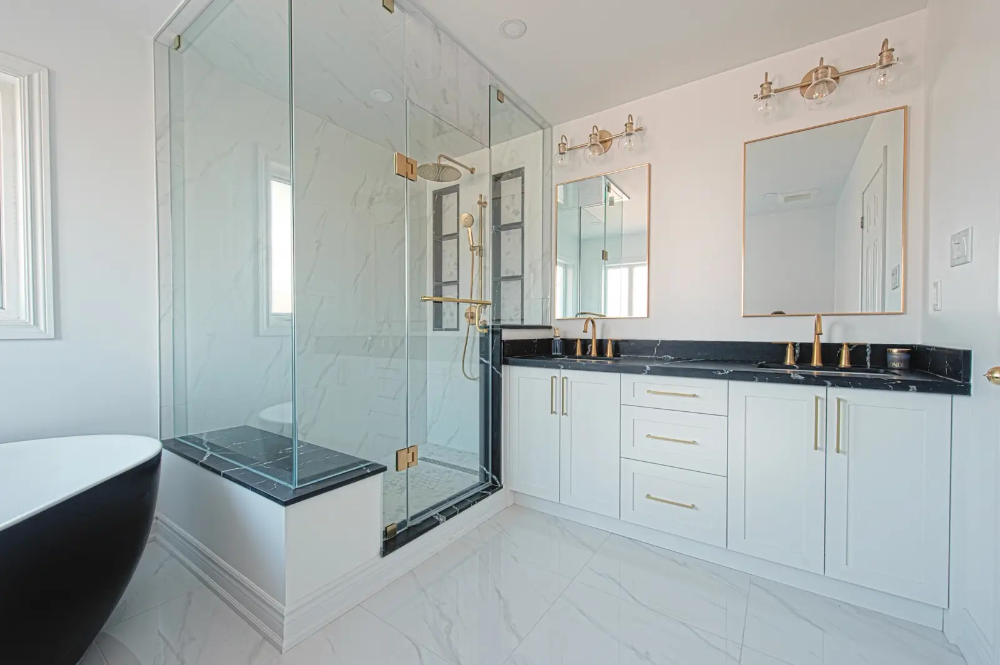
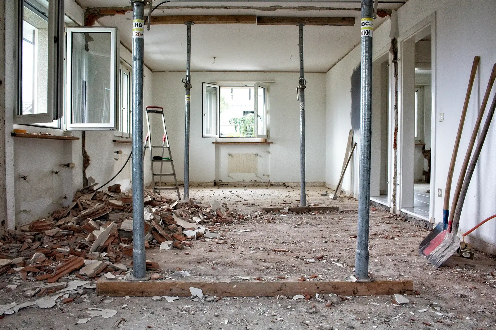
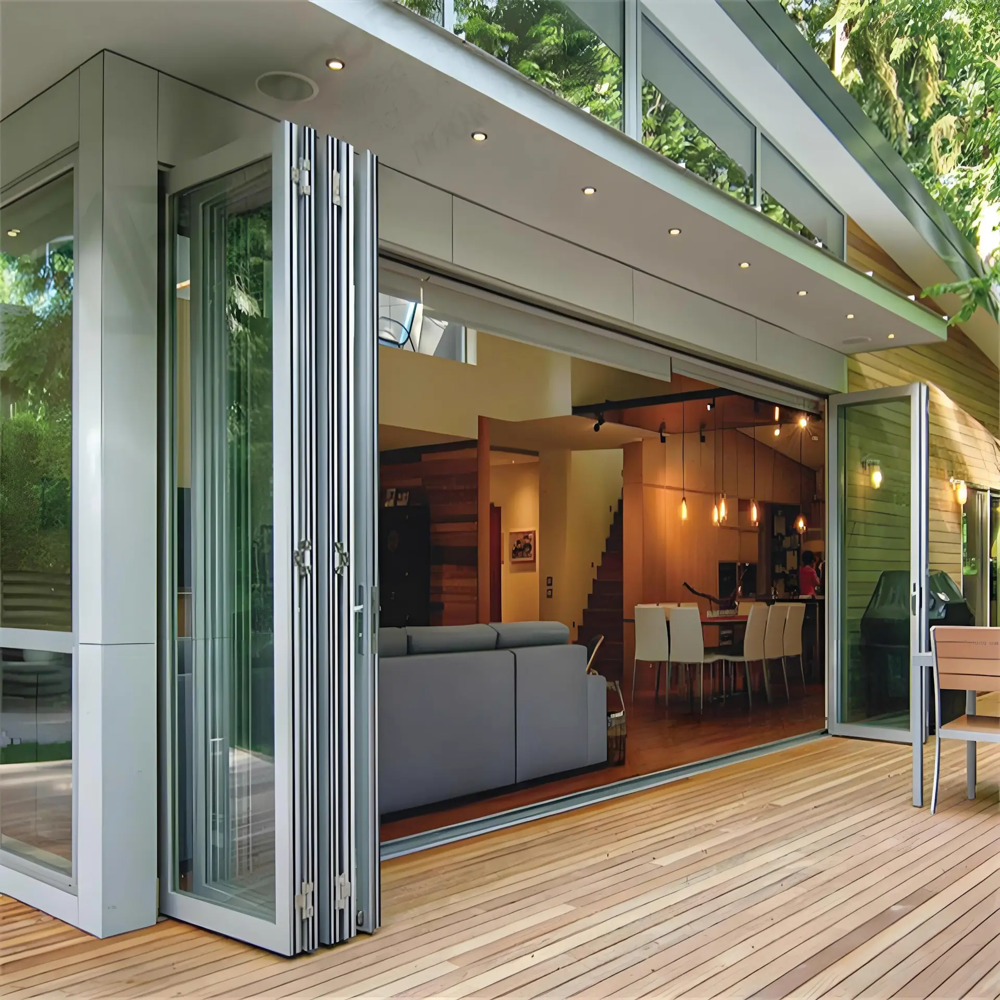
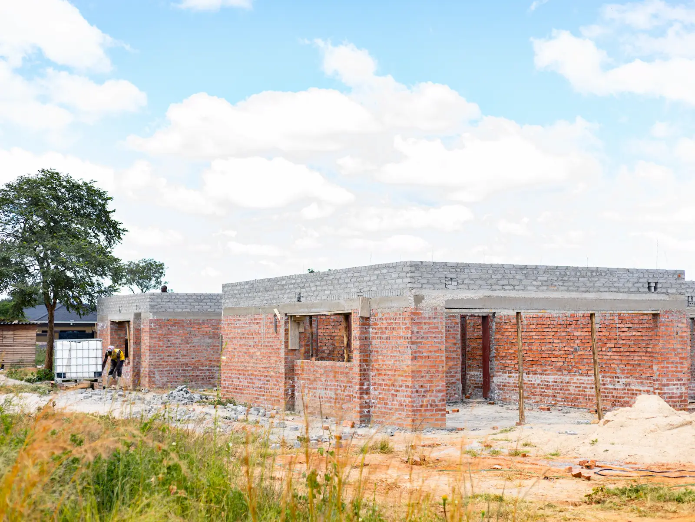
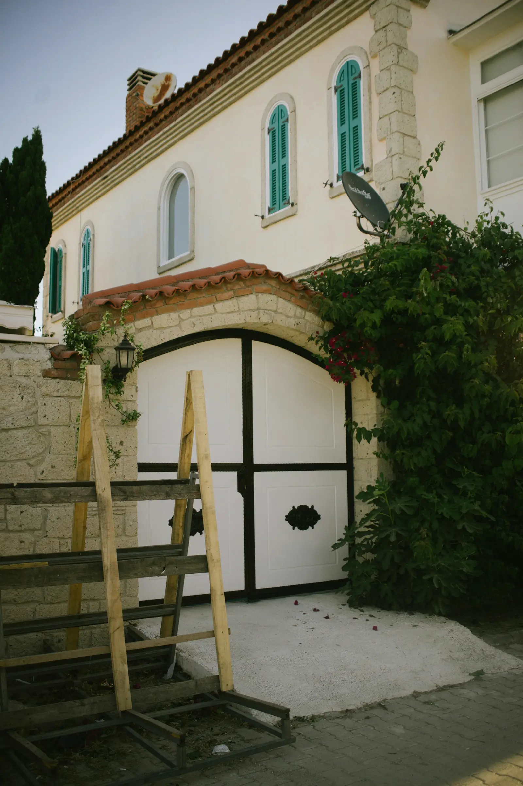
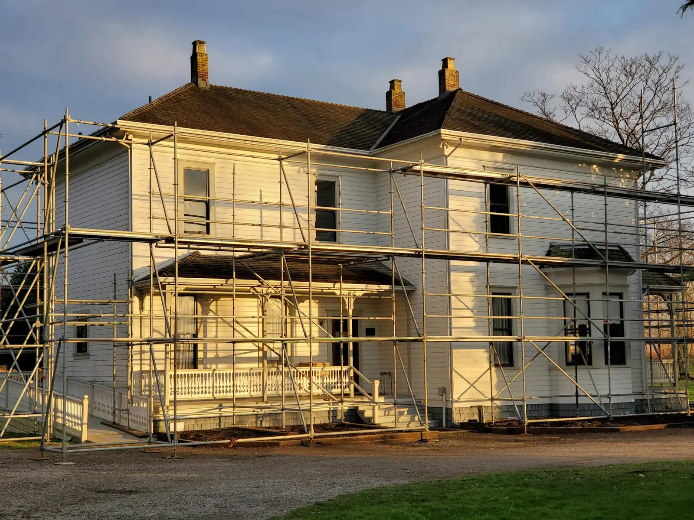

Salle de bain à Annecy
Baignoire remplacée par une douche à l’italienne, carrelage grand format au sol et aux murs.


- Travaux
- Rénovation intérieure
- Surface
- 8 m²
- Durée
- 3 semaines
- Budget
- 9 800 € TTC

Faites glisser la barre sur chaque photo pour comparer l’état du chantier avant et après nos travaux.
Baignoire remplacée par une douche à l’italienne, carrelage grand format au sol et aux murs.


Une pièce de vie de 25 m² ajoutée à l’arrière de la maison, avec une baie vitrée sur le jardin.


Ravalement complet et isolation par l’extérieur d’une maison des années 1970.


Nous passons voir votre chantier et nous vous envoyons un devis détaillé sous une semaine, gratuitement et sans engagement.
Ou appelez-nous au 04 65 71 20 30